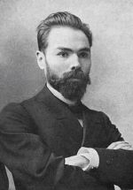

Литература серебряного века
Валерий Брюсов родился в 1873 году в московской купеческой семье. Он был внуком поэта Александра Бакулина, автора «Басен провинциала».
В 11-12 лет Брюсов сблизился с другими юными любителями чтения, вместе они начали издавать рукописный журнал «Начало». В эти годы начинающий писатель пробовал свои силы в прозе и поэзии, переводил античных и современных авторов. Однако первой публикацией Брюсова стала вполне обыденная статья — в 13 лет он выступил на страницах журнала «Русский спорт» в поддержку тотализатора на скачках.
В 1893 году Брюсов поступил на историко-филологический факультет Московского университета. Уже на втором курсе обучения поэт опубликовал свой первый сборник «Chefs d’oeuvre» — «Шедевры».
Двумя годами позднее вышел второй сборник — «Это — я». В нем появились урбанистические, исторические и научные мотивы. Следующую книгу — сборник стихотворений «Третья стража» с историко-мифологическими сюжетами
В 1903 году Брюсов выпустил книгу «Граду и миру», а в 1906-м — сборник «Венок».Параллельно с литературным творчеством поэт издает журнал символистов «Весы», руководит отделом литературной критики в журнале «Русская мысль»